vorkurs designs and builds digital products for climate, finance and mission‑driven organisations. Strategy, design and code in one team, from the first question to launch and after.
The name comes from the Vorkurs, the Bauhaus preliminary course where every student started with materials, form and function before anything else.
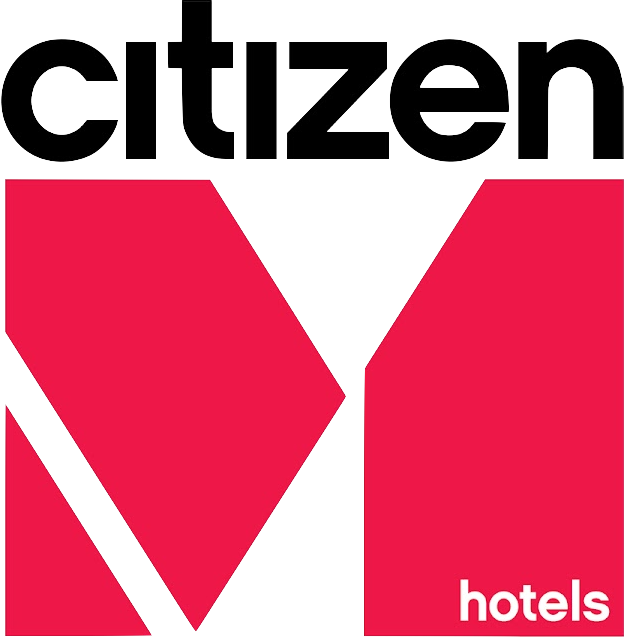
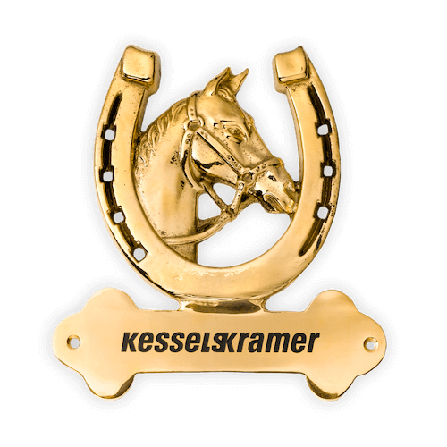
Selected work
Five projects
brandmelder
with NEW STANDARD.S, Berlin
Web development & image tooling
From brand design to a live site in under two weeks, with a halftone tool that keeps every story on-brand.
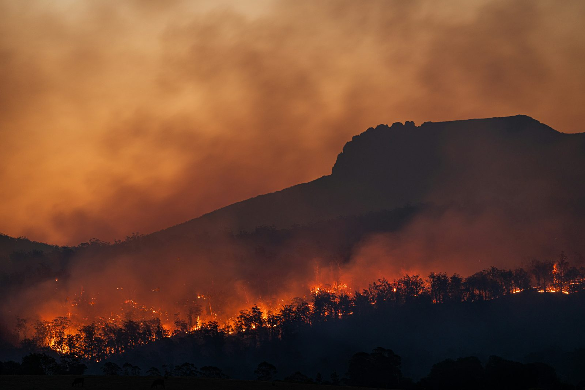
The halftone generator, running live. Editors upload a photo, set the dots and pick a colour.
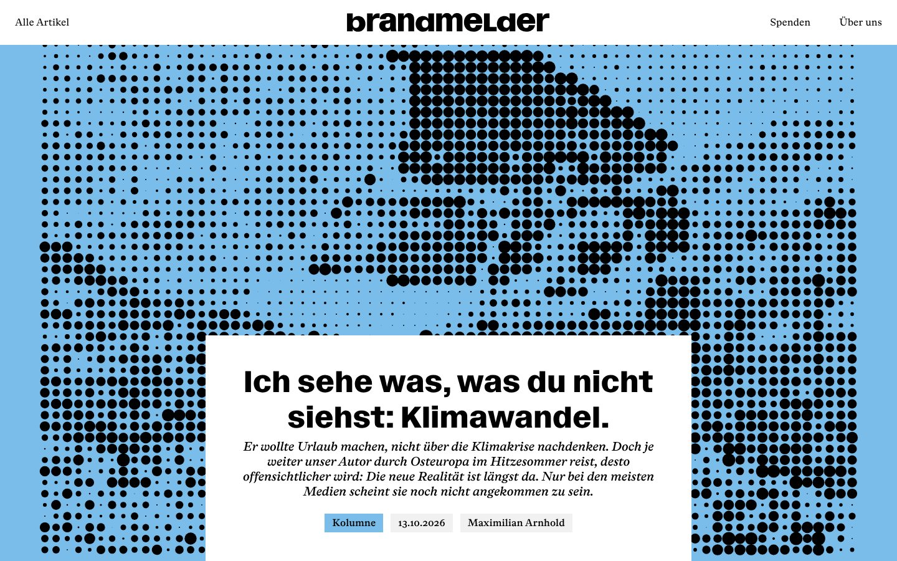
Homepage
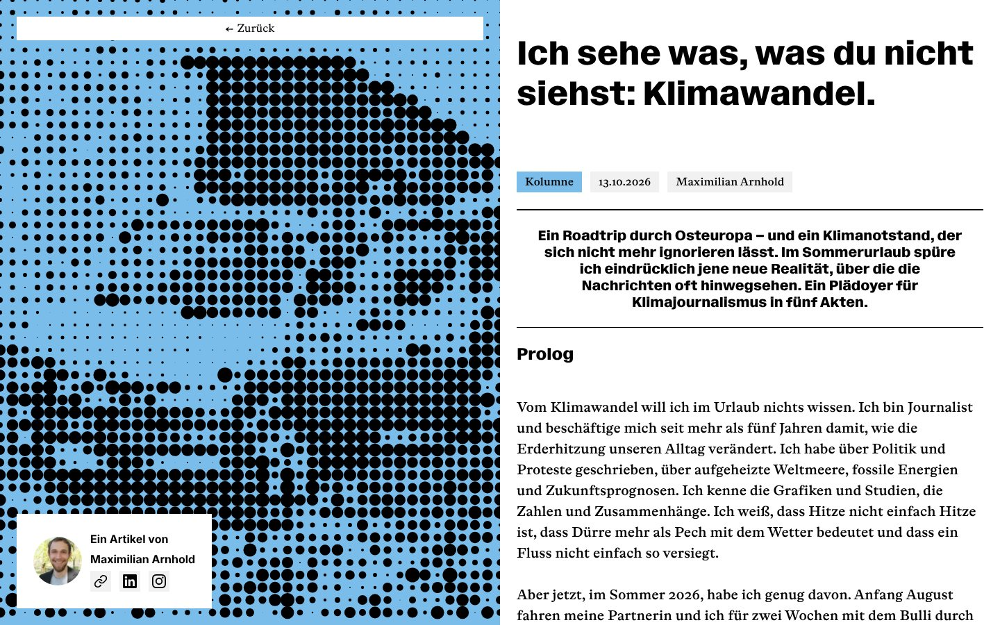
Article page
brandmelder is a non-profit climate journalism project by Netzwerk Klimajournalismus Deutschland. Working with the Berlin studio NEW STANDARD.S, we took their brand design to a live site in under two weeks.
Inside the CMS we built a halftone image generator, starting from the studio's p5.js prototype. Every article image now comes out of it, so the site stays on-brand without a designer in the loop.
One component system behind a multi-site platform, consistent across every region and sub-brand.
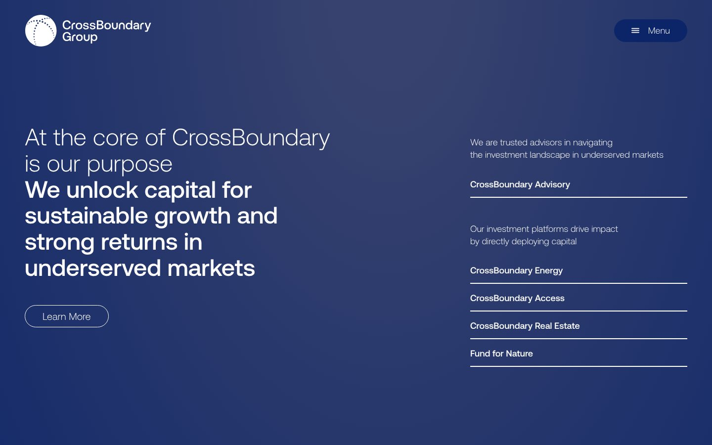
Group homepage, linking the advisory and investment platforms
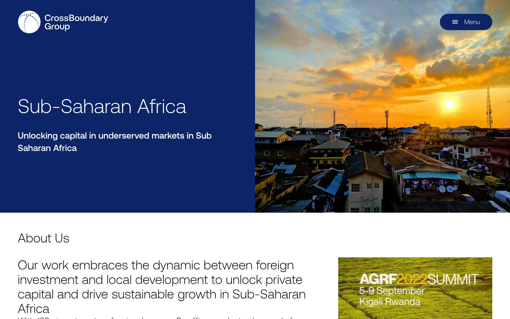
Regional page: Sub-Saharan Africa
CrossBoundary is one of the largest sustainable-development investment firms working in the Global South. Partnering with backendforth, we led development of their multi-site platform.
We turned the component system into a scalable frontend, so complex financial content reads clearly and every regional site and sub-brand stays visually consistent.
Campaigns that generated €20M+ in revenue in 2024 alone, kept on-brand across 37 hotels worldwide.
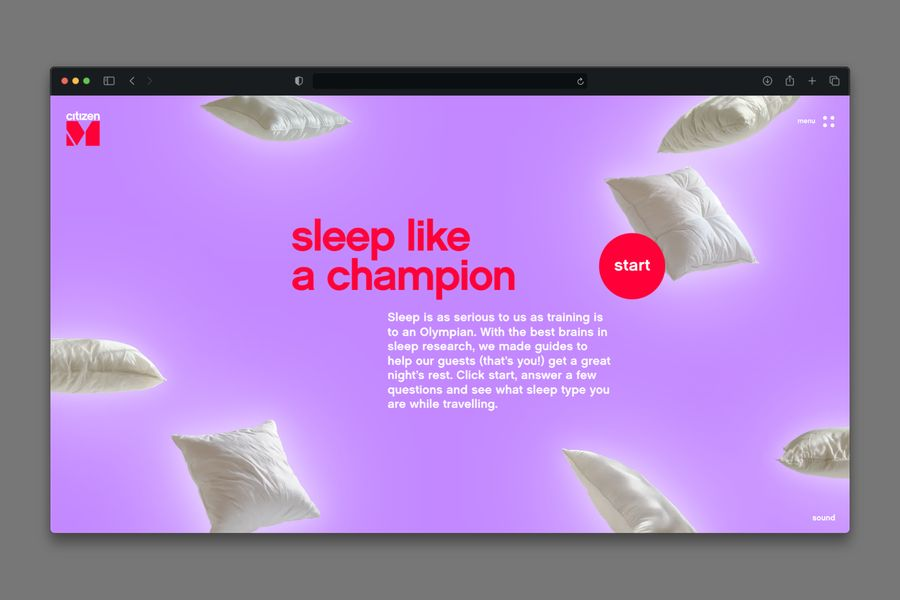
“Sleep like a champion”, interactive sleep-type quiz
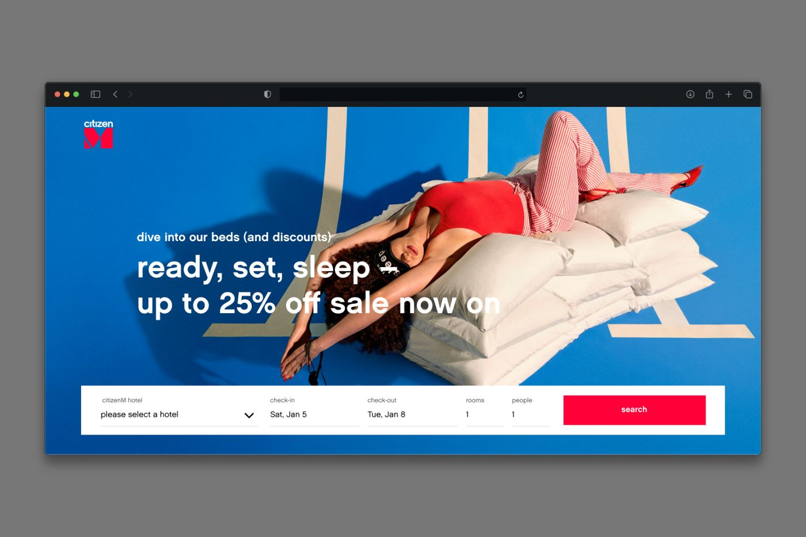
Sale campaign landing page
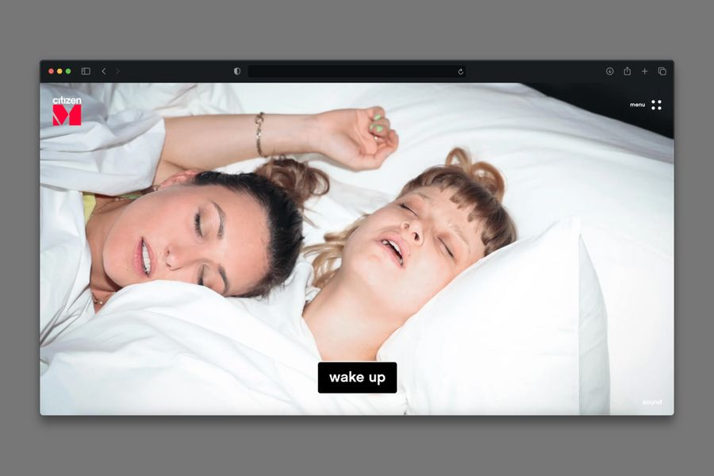
Quiz result
We set the creative direction across citizenM's digital channels: landing pages, campaigns, CRM reaching millions of subscribers, and paid media.
We built the brand design system in Figma and led an in-house content team whose photography and video replaced agency work, saving €50K+ a year. Along the way we mentored junior designers and managed external agencies.
A booking platform of its own, so therapists keep their clients, their prices and their full fee.
Thai yoga massage, from the brand film
9:41●●●
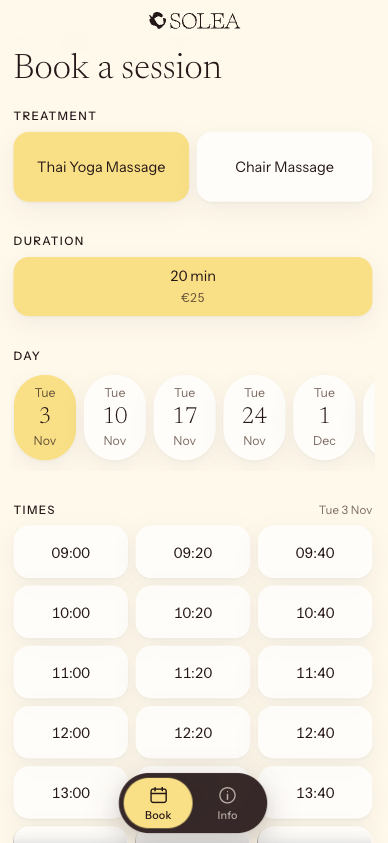
Booking: treatment, duration, day, time
Solea brings certified practitioners into Amsterdam offices: Thai yoga massage, chair massage and more. We designed the brand and built a browser-based booking app on top of it.
Employees at partner offices book a slot in the weekly treatment room and pay the therapist directly, without a large platform taking a cut of every session.
Erik Kessels × Gallerie d'Italia
Un'Immagine, Turin, 2025
Creative & technical direction
A 360° room where an algorithm stitches thousands of archive photographs into one moving image.
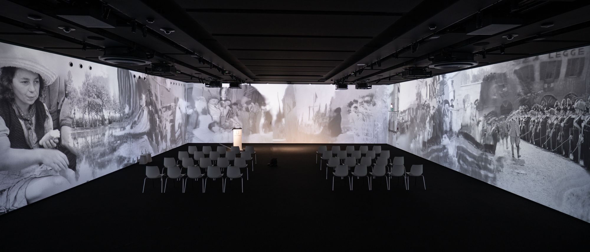
The installation, Publifoto Archive
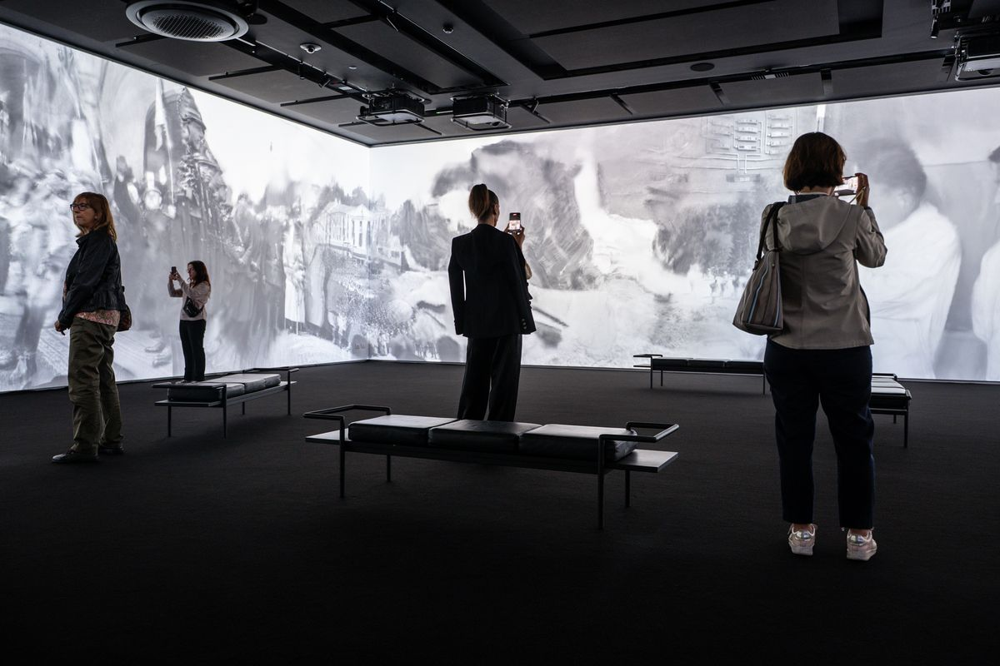
Visitors inside the projection
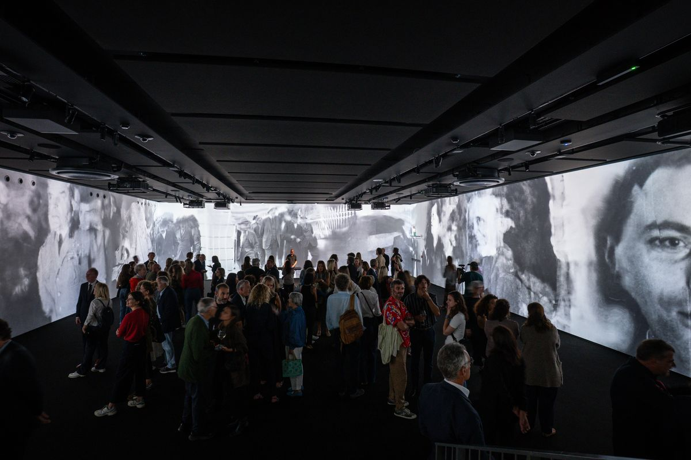
Opening night
We worked with artist Erik Kessels on Un'Immagine, a large-scale immersive installation built from the Publifoto Archive, with a continuously moving 360° image and sound.
We were the bridge between the creative and the technical: interpreting the artistic vision, finding the right collaborator, managing the creative dialogue and overseeing delivery.